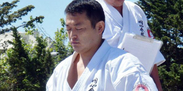
Sensei
Naohiro Tomiyama Sensei is the 1992 Enshin Karate World Champion with more than 40 years of martial arts experience.
About Sensei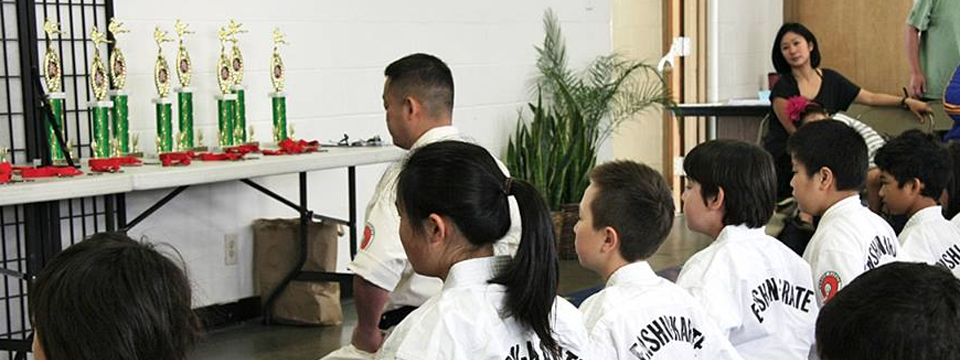


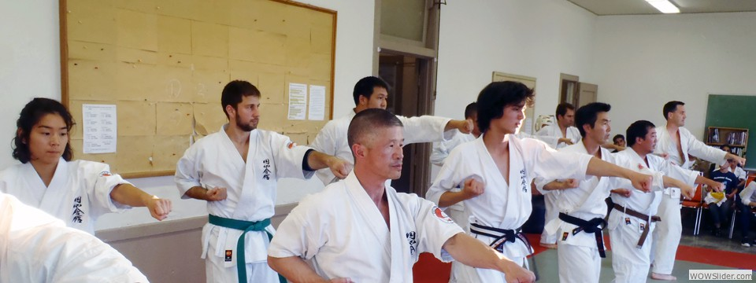
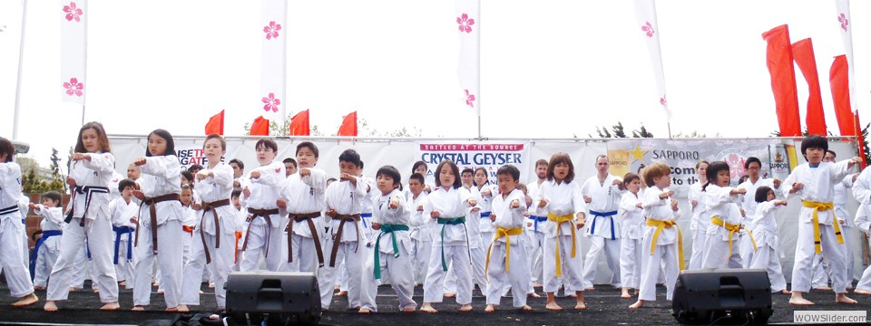
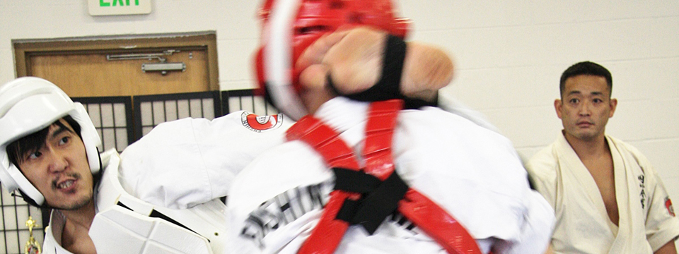
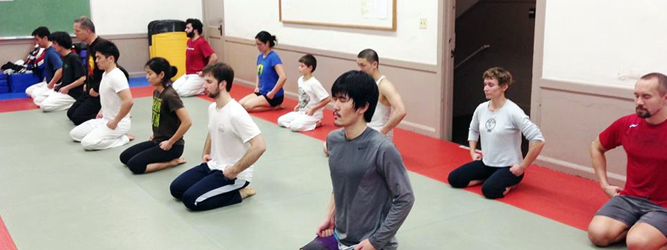
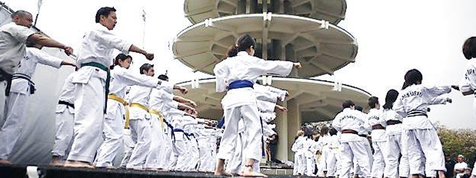
What Is Enshin Karate?
Enshin Karate is a style of Full Contact Karate founded in 1988 by Kancho Joko Ninomiya. The core emphasis in Enshin is use of the Sabaki Method, a system of techniques employed with the goal of turning an opponent's power and momentum against him or her.
It lets one reposition oneself to counterattack from a more advantageous position. Although Enshin is a stand-up fighting style that includes kicks, strikes, and punches found in most other styles of karate, it also utilizes numerous grabs, sweeps, and throws often associated with Judo or other grappling styles of martial arts.
Enshin Karate is a very effective method of self-defense for everyone, especially women and children. It is a great way to gain good physical health and a strong mind.
Read More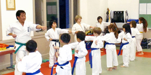

Naohiro Tomiyama Sensei is the 1992 Enshin Karate World Champion with more than 40 years of martial arts experience.
About Sensei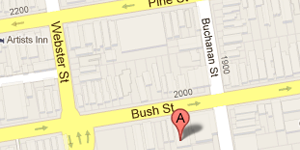
The dojo is located at 2031 Bush Street, inside the Kimon Gakuen Building near Buchanan and Webster.
Find the Dojo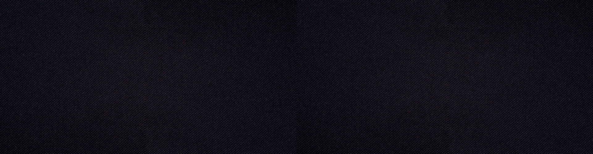
Classes meet twice a week on Mondays and Fridays from 6:00pm to 7:30pm, with the dojo opening at 5:30pm.
Class Details
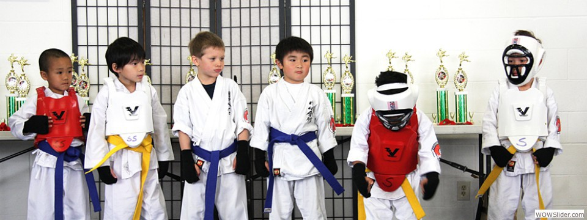
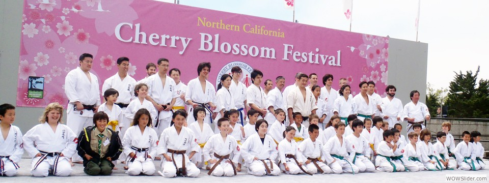
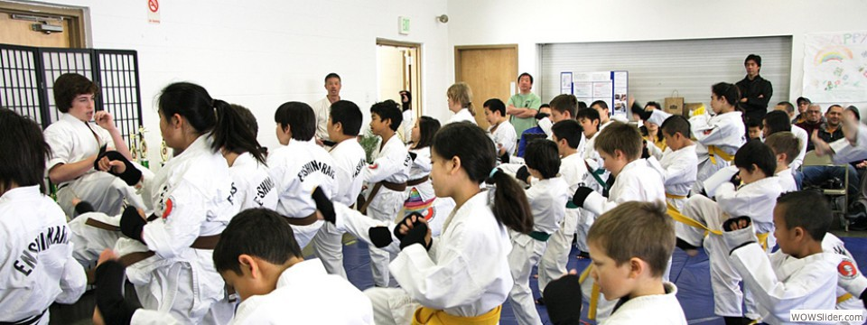
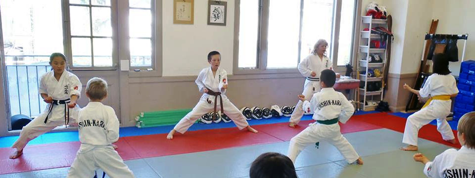